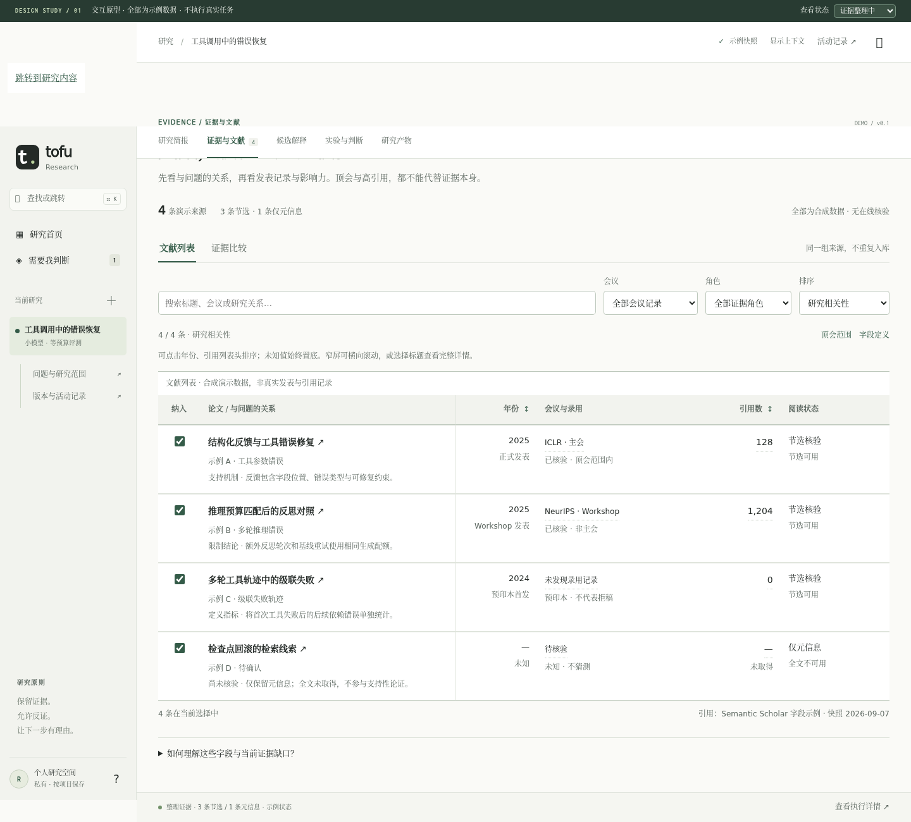
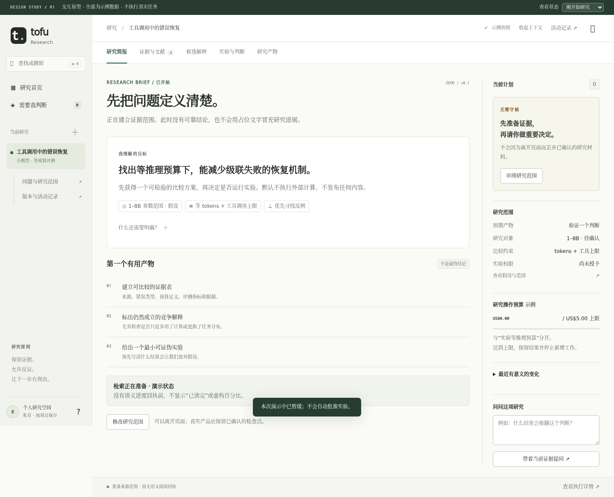
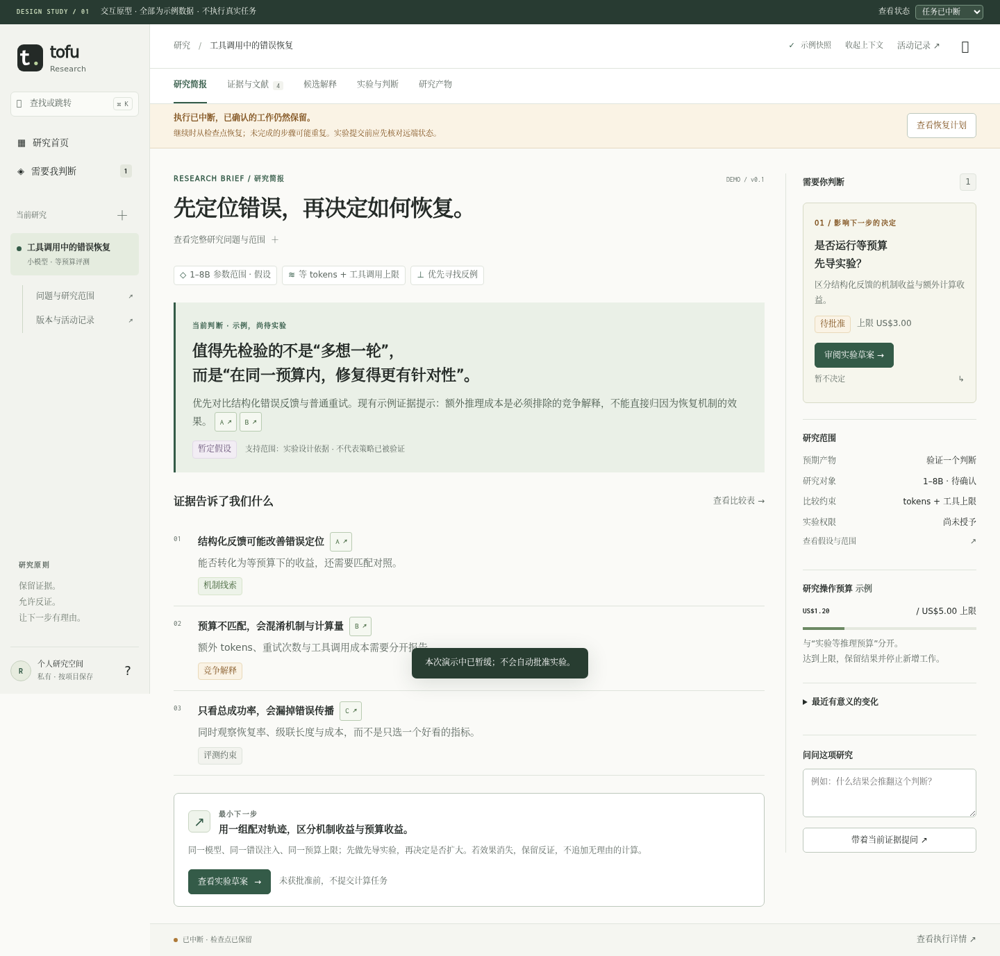
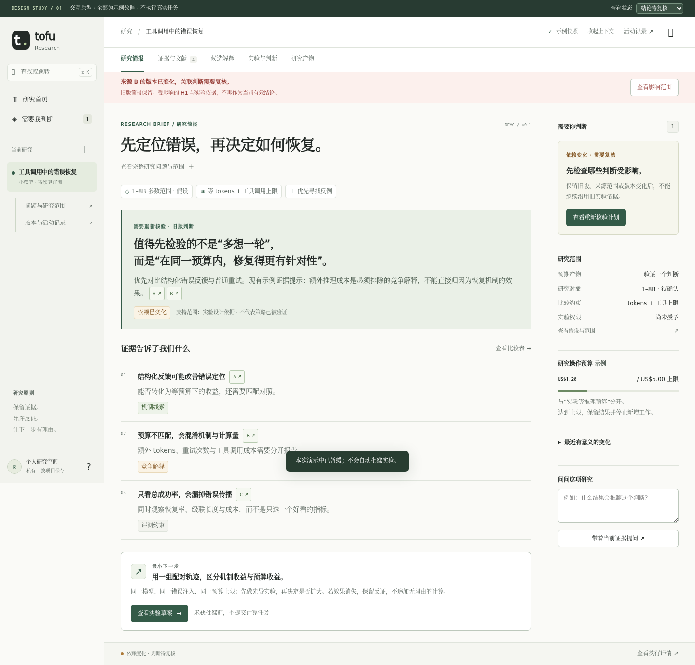
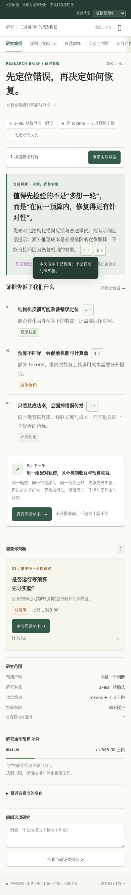
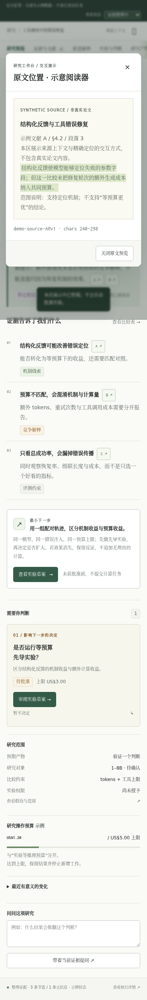
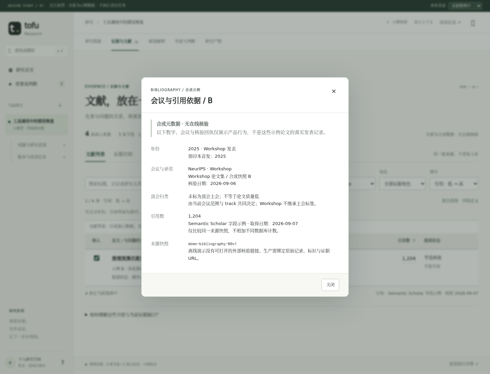
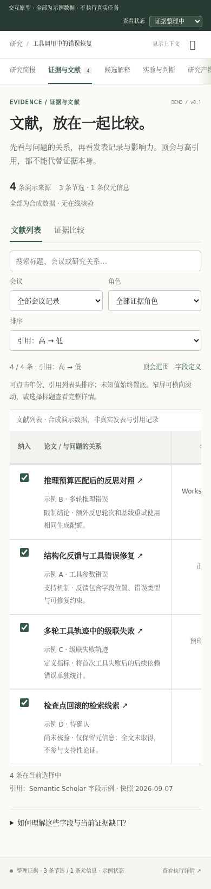
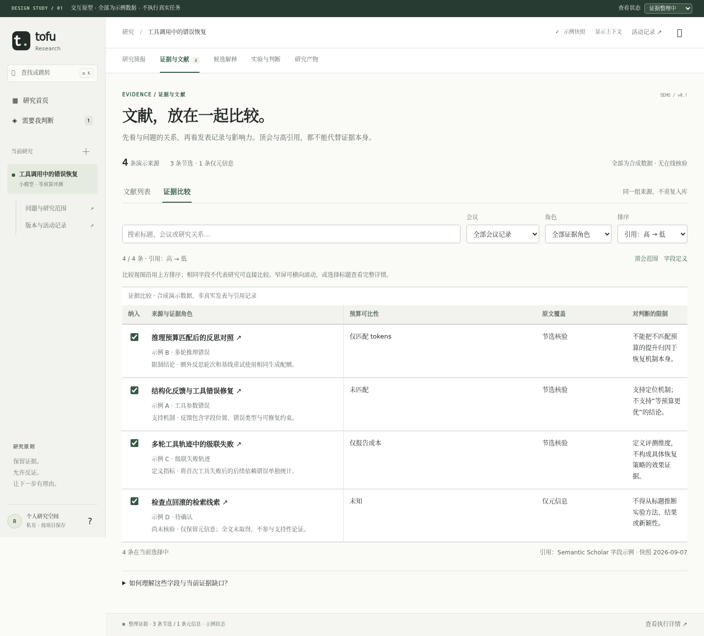

证据检查器 / Evidence inspector
可排序文献列表 / Sortable literature table

限定范围的批准 / Exact approval
开始研究 / Initial state

恢复研究 / Interrupted

依赖变化 / Stale evidence

移动端简报 / Mobile

移动端原文 / Source on mobile

研究首页 / Home
候选解释 / Hypotheses
研究产物 / Outputs
会议与引用依据 / Bibliographic provenance

移动端文献列表 / Literature on mobile

证据比较视图 / Shared evidence comparison
